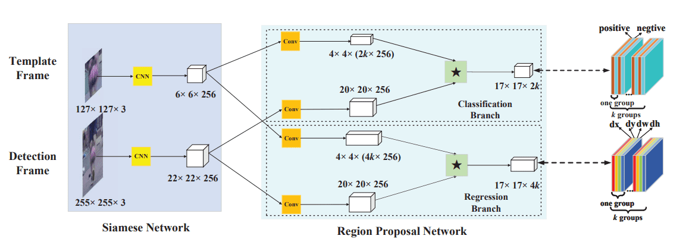
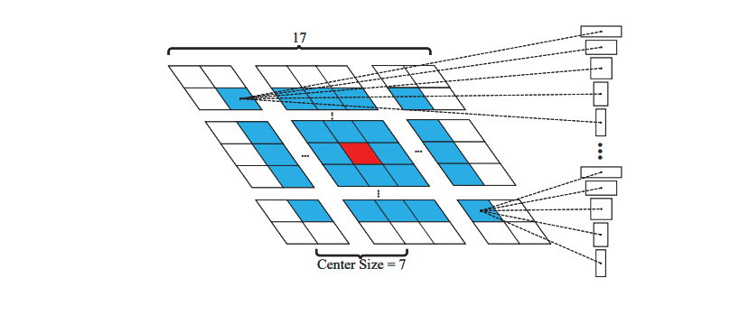

概述
- 将目标检测中的RPN网络应用在目标追踪。
- 两部分：
- 用于特征提取的Siamese网络（使用预训练的AlexNet）。
- 预测边缘框和置信度的 RPN 网络。
方法

Siamese 网络
共享参数的 AlexNet：
- 第一帧给定的 127×127 模板图像，输入Siamese网络，得到 256×6×6 的特征图，文中记为 φ(z)。
- 当前帧 255×255 的Search Image，输入Siamese网络，得到 256×22×22 的特征图，φ(x)。
RPN 网络
k 为每个位置上生成的锚框数量。
分类分支
- 将Siamese的输出 φ(z) 和 φ(x) 分别通过 3×3 卷积层（两个卷积参数不共享）映射到 4×4×(2k×256) （2k：(positive,negative)）和 20×20×256，即为 [φ(z)]cls 和 [φ(x)]cls
- [φ(z)]cls 以“组”的方式作为 [φ(x)]cls 的卷积核，也就是说，[φ(z)]cls 一组中的通道数与 [φ(x)]cls 整体的通道数相同，即 [φ(z)]cls 通道数为 2k 为 256 的卷积核，分别将这 2k 组卷积核与 [φ(x)]cls 卷积得到 2k 组通道为 1 的特征图，然后沿着通道拼接最终得到一个通道数为 2k 的特征图 A17×17×2kcls=[φ(x)]cls∗[φ(z)]cls，表示 [xicls,yjcls,clcls],i∈[0,w),j=[0,h),l=[0,2k)。
回归分支
类似的：
- 通过卷积映射到 4×4(×4k×256) （4k：(x,y,w,h)）和 20×20×256 得到 [φ(z)]reg 和 [φ(x)]reg。
- A17×17×4kreg=[φ(x)]reg∗[φ(z)]reg，表示 [xireg,yjreg,[dxpreg,dypreg,dwpreg,dhpreg]],i∈[0,w),j=[0,h),p=[0,k)
损失函数
回归损失
回归分支的输出 Ax,Ay,Aw,Ah，Ground Truth Tx,Ty,Tw,Th 两者距离为：
(Tx−Ax),(Ty−Ay),(AwTw),(AhTh)
为了消除不同大小锚框的尺寸差异，引入正则化后的 δ。
δ[0]=AwTx−Ax,δ[1]=AhTy−Ayδ[2]=lnAwTw,δ[3]=lnAhTh
然后通过 Smooth L1 损失：
smoothL1(x,σ)=⎩⎪⎪⎨⎪⎪⎧0.5σ2x2,∣x∣−2σ21,∣x∣<σ21else
回归损失被写为：
Lreg=i=0∑3smoothL1(δ[i],σ)
分类损失
交叉熵损失
总体损失
loss=Lcls+λLreg
Anchor 设置

只对特征中间小一圈的范围内每个点生成长宽比为 (31,21,1,2,3) 的5个锚框。因为上一帧检测到的锚框被变换到了图像中间（输入图像的处理与SiamFC的处理方法一致），而这一帧与上一帧的位置不会变化太大，即也在中间的小范围内。
CVPR
Github